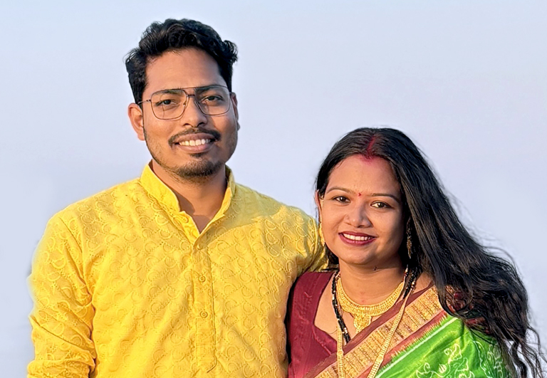

Behind every research paper, lecture, and intellectual pursuit lies a quieter story — one of companionship, inspiration, and shared journeys. While academia defines a part of my identity, the deeper foundations of my life are shaped by the people who walk beside me in that journey.
Academic journeys are often portrayed as solitary — long hours in Computing Labs, libraries, silent reflections, and the relentless pursuit of knowledge. Yet, sometimes within those very spaces, life introduces a companion whose presence transforms the journey itself.
During my PhD days at the University of Hyderabad, amidst seminars, research discussions, and the quiet rhythm of campus life, I met someone who would eventually become the most important part of my personal world.

Dr. Subhashree Sahoo is a scholar of remarkable intellectual depth and social sensitivity. She earned her PhD in Applied Ethics from IIT (ISM) Dhanbad, where her research focused on the critical intersection of business ethics, sustainability practices, and their role in shaping social transformation.
Her work explores how ethical decision‑making and responsible corporate behavior can influence communities, institutions, and long‑term societal well‑being. In an age where technological progress often outpaces ethical reflection, her scholarship reminds us that sustainable futures require moral imagination as much as innovation.
Yet beyond the academic world, she possesses another equally beautiful dimension — she is a gifted singer. Music has always been an inseparable part of her personality. Her voice carries warmth and depth, often transforming ordinary moments into something quietly magical.
Somewhere between intellectual conversations and shared moments on campus, admiration gradually turned into affection. I fell in love with her — and eventually had the privilege of marrying the person who had already become my closest friend and strongest supporter.
Today, she remains the grounding force behind my professional and personal life. Through the uncertainties and challenges of academic journeys, she stands as my support system, confidante, and inspiration.